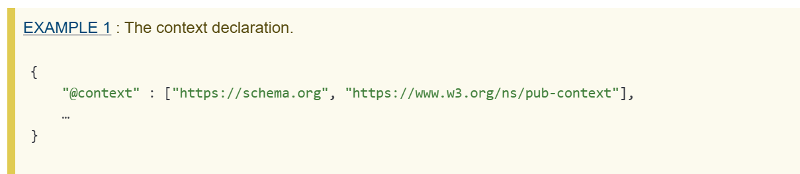

How is audiobooks used:
The primary page of an audiobook uses the structure of an HTML document that clearly states the entry page for the audiobook, which Uses a link To access the audiobook, It also should include a table of content that lists the hierarchy of the information or chapters of the book.

When creating audiobooks, you have to choose a global language that can translate the
audiobook language. This is so the user can have access to many different
languages the book has been translated in to.
“To add the global language and direction of the manifest metadata, languages
and direction declaration” (W3School audiobooks)
Audiobooks can be used on tablets computers and smartphones. For best results, choose a device that fits your setting. Once you have your favorite device, you can start to listen to audio files that create a world of its own.